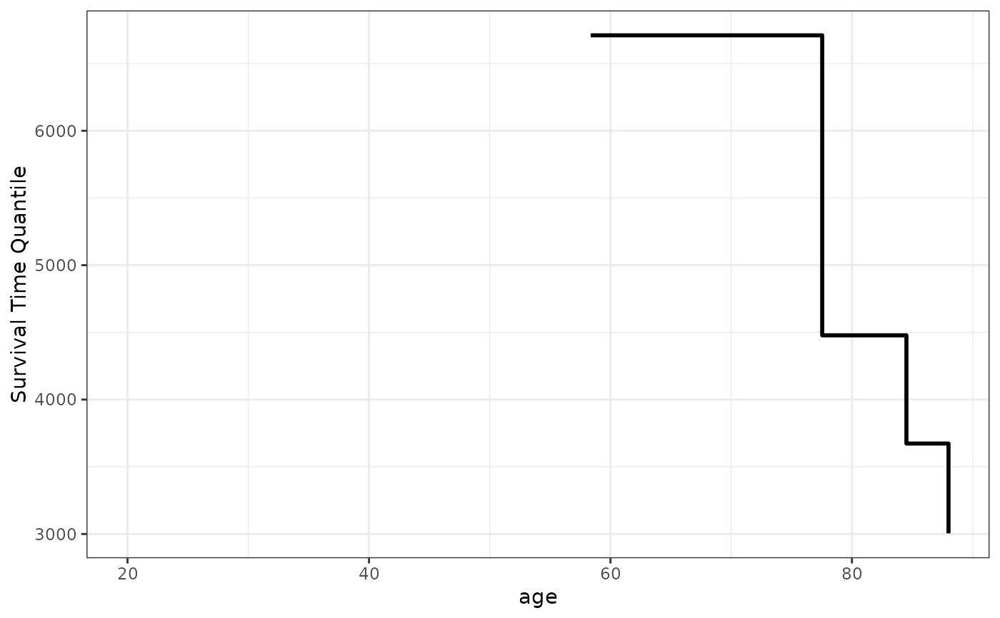
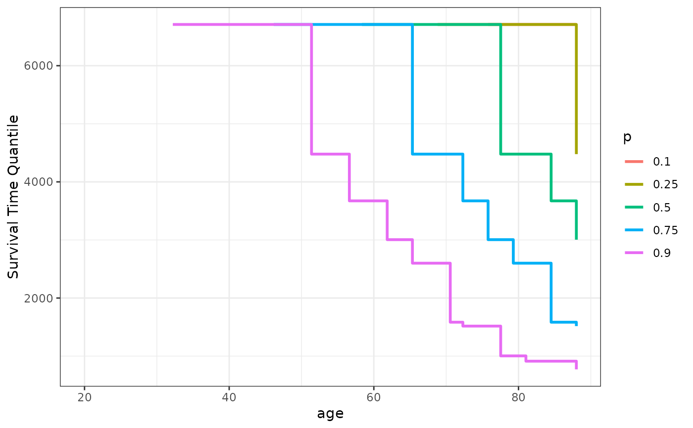
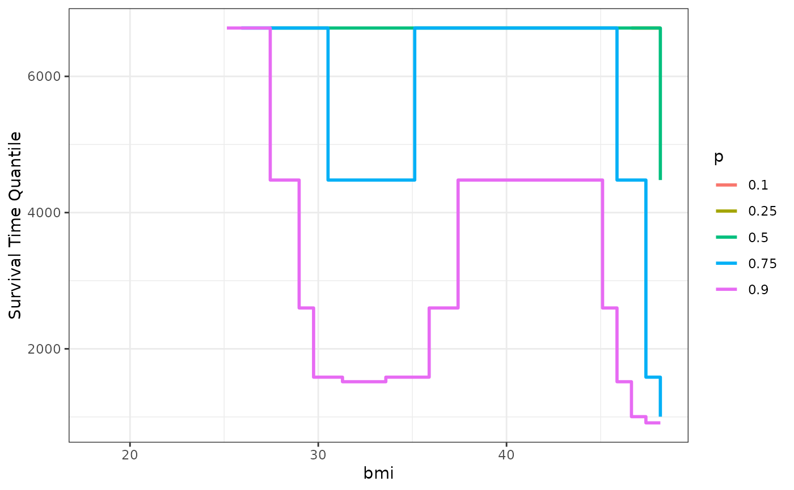

Plot Survival Time Quantiles as a Function of a Continuous Variable
plot_surv_quantiles.RdUsing a previously fit time-to-event model, this function plots one or multiple survival time quantiles (such as the median survival time) as a function of a continuous variable of interest.
Usage
plot_surv_quantiles(time, status, variable, group=NULL,
data, model, na.action=options()$na.action,
p=0.5, horizon=NULL,
size=1, linetype="solid", alpha=1,
custom_colors=NULL, single_color=NULL,
xlab=variable, ylab="Survival Time Quantile",
title=NULL, subtitle=NULL,
legend.title=variable, legend.position="right",
gg_theme=ggplot2::theme_bw(),
facet_args=list(), ...)Arguments
- time
A single character string specifying the time-to-event variable. Needs to be a valid column name of a numeric variable in
data.- status
A single character string specifying the status variable, indicating if a person has experienced an event or not. Needs to be a valid column name of a numeric or logical variable in
data.- variable
A single character string specifying the continuous variable of interest, for which the survival curves should be estimated. This variable has to be contained in the
data.framethat is supplied to thedataargument.- group
An optional single character string specifying a factor variable in
data. When used, the plot is created conditional on this factor variable, meaning that a facetted plot is produced with one facet for each level of the factor variable. Seecurve_contfor a detailed description of the estimation strategy. Set toNULL(default) to use no grouping variable.- data
A
data.framecontaining all required variables.- p
A numeric vector containing the survival time quantiles of interest. For example, if the user is interested in plotting only the median survival time
p=0.5should be used. When multiple values are supplied, one curve is drawn for each quantile.- model
A model describing the time-to-event process (such as an
coxphmodel). Needs to includevariableas an independent variable. It also has to have an associatedpredictRiskmethod. See?predictRiskfor more details.- na.action
How missing values should be handled. Can be one of:
na.fail,na.omit,na.pass,na.excludeor a user-defined custom function. Also accepts strings of the function names. See?na.actionfor more details. By default it uses the na.action which is set in the global options by the respective user.- horizon
A numeric vector containing a range of values of
variablefor which the survival curves should be calculated orNULL(default). IfNULL, the horizon is constructed as a sequence from the lowest to the highest value observed invariablewith 100 equally spaced steps.- size
A single number specifying how thick the lines should be drawn.
- linetype
The linetype of the drawn lines. See documentation of ggplot2 for more details on allowed values.
- alpha
The transparency level of the lines.
- custom_colors
An optional character vector specifying the colors that should be used when multiple quantiles were supplied to the
pargument. To set the whole plot or a single curve to one color only, use thesingle_colorargument instead.- single_color
A single character string specifying the color of all drawn lines.
- xlab
A character string used as the x-axis label of the plot.
- ylab
A character string used as the y-axis label of the plot.
- title
A character string used as the title of the plot.
- subtitle
A character string used as the subtitle of the plot.
- legend.title
A character string used as the legend title of the plot.
- legend.position
Where to put the legend. See
?themefor more details.- gg_theme
A ggplot2 theme which is applied to the plot.
- facet_args
A named list of arguments that are passed to the
facet_wrapfunction call when creating a plot separated by groups. Ignored ifgroup=NULL. Any argument except thefacetsargument of thefacet_wrapfunction can be used. For example, if the user wants to allow free y-scales, this argument could be set tolist(scales="free_y").- ...
Further arguments passed to
curve_cont.
Details
Survival Time Quantiles are a single value summarizing the entire survival curve. For example, the most prominently used survival time quantile is the median survival time, which can be interpreted as the time at which half of the people in the sample are expected to have experienced the event of interest. This plot shows one or more of these quantiles as a function of a continuous variable of interest.
To calculate the survival time quantiles, it first calls the curve_cont function to get estimates of the value-specific survival curves. Afterwards, it uses step function interpolation to read off the survival time quantile from the estimates.
Although this is a simple way to plot the effect of a continuous covariate on the survival, it can give a misleading visualization of the relationship in some situations. Plots that do not use summary statistics, such as the plot_surv_contour and plot_surv_area plots, may be preferable.
Examples
library(contsurvplot)
library(riskRegression)
library(survival)
library(ggplot2)
library(splines)
# using data from the survival package
data(nafld, package="survival")
# take a random sample to keep example fast
set.seed(42)
nafld1 <- nafld1[sample(nrow(nafld1), 150), ]
# fit cox-model with age
model <- coxph(Surv(futime, status) ~ age, data=nafld1, x=TRUE)
# plot effect of age on the median survival time
plot_surv_quantiles(time="futime",
status="status",
variable="age",
data=nafld1,
model=model)
#> Warning: Removed 22 row(s) containing missing values (geom_path).

# plot multiple survival time quantiles
plot_surv_quantiles(time="futime",
status="status",
variable="age",
data=nafld1,
model=model,
p=c(0.1, 0.25, 0.5, 0.75, 0.9))
#> Warning: Removed 104 row(s) containing missing values (geom_path).

## showing non-linear effects
# fit cox-model with bmi modelled using B-Splines,
# adjusting for age and sex
model2 <- coxph(Surv(futime, status) ~ age + male + bs(bmi, df=3),
data=nafld1, x=TRUE)
# plot effect of bmi on survival
plot_surv_quantiles(time="futime",
status="status",
variable="bmi",
data=nafld1,
model=model2,
p=c(0.1, 0.25, 0.5, 0.75, 0.9))
#> Warning: Removed 107 row(s) containing missing values (geom_path).
